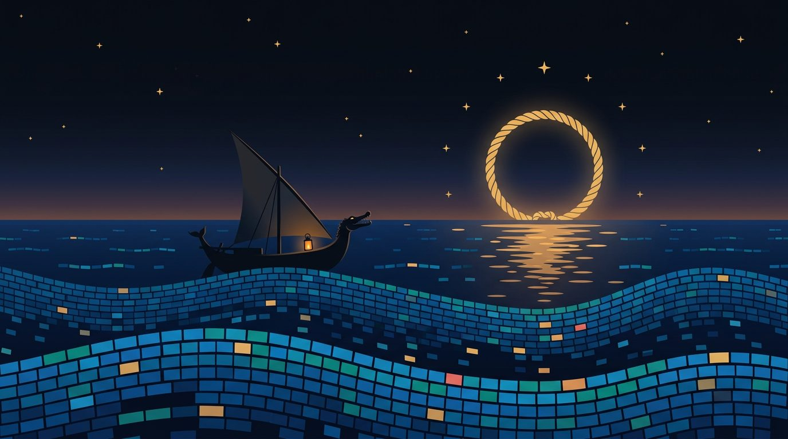
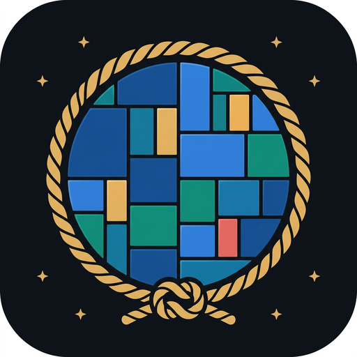

Your disk is an ocean — Diskhoji is the seeker that sounds it. One standalone native Rust app — a single ~7 MB binary — charts millions of files a second into a cushion treemap, a heatmap of a thousand watching cells, and radial rings that ripple out from the deep. No Electron, no telemetry, no account — nothing about you leaves your ship.
— downloads total · counted by GitHub
curl -fsSL https://diskhoji.org/install.sh | shAppImage — mark it executable (your file manager's "allow executing", or chmod +x) and double-click. The one-line installer above moors diskhoji in ~/.local/bin and adds it to your applications menu.
curl -fsSL https://diskhoji.org/install.sh | shApple Silicon. Open the .dmg, drag Diskhoji into Applications. First launch is blocked (ad-hoc signed, not yet notarized): open it once, then allow it in System Settings → Privacy & Security → Open Anyway (or run xattr -dr com.apple.quarantine /Applications/Diskhoji.app).
irm https://diskhoji.org/install.ps1 | iexRun the .msi — installs Diskhoji, adds Start Menu & Desktop shortcuts, and puts it on PATH. Not code-signed yet, so SmartScreen may say "unknown publisher" — click More info → Run anyway. Prefer no installer? Grab the portable zip and double-click diskhoji.exe.
# or build from source — Linux, macOS & Windows, needs rustup.rs $ git clone https://github.com/singhpratech/diskhoji && cd diskhoji $ cargo build --release && ./target/release/diskhoji ~/
A native window by default — --web serves the same dashboard on localhost if you prefer the browser.
A little offline diversion, right here on deck: leap the corrupt reefs, gather the amber bytes, see how many fathoms you can log. Space, ↑, or tap to jump — release early for a short hop, ↓ to dive. Works with the rigging cut — no connection needed. And it sails with you: the same game ships inside the app — click Play game in Diskhoji itself.
Space, ↑, or tap — leap. Hold for the full arc; let go early and the boat takes a short hop, exactly like the Chrome dino. ↓ in mid-air dives back to the water at triple speed.
The current starts gentle and builds steadily for about two minutes to full tide — no sudden cliffs. Reef gaps stretch as the water speeds up, and every reef is proven clearable by frame-exact simulation before it ships.
Fathoms log your distance; each amber byte is worth 8. Tall reefs demand a full-arc leap — short hops clear only the small ones. Your best voyage is kept in the ship's log, on this device only.
The very same voyage ships inside Diskhoji — click Play game on the landing deck or in the dashboard toolbar. It sails in --web mode too. No connection needed, anywhere.
A treemap makes the giant files impossible to miss — but a thousand small files vanish into slivers. So Diskhoji carries two more charts: a heatmap where every item holds an equal cell and color carries the size, like watch-lights on dark water — and radial rings that fan the current folder into a sunburst, five rings deep. All three are drawn live below, straight from the same chart engine the app runs. One click changes charts; zoom, select, and right-click hold their course in all three.
Cushion-shaded, area = size. Double-click to dive into any folder, breadcrumbs to surface again.
One cell per item, ring = folder, color = size on a log scale. The small-but-many stay in sight.
The current folder fanned into a sunburst, up to five rings out from the hub. Each wedge's sweep is its share of the space; dive by clicking a wedge, surface by clicking the centre.
Scanner, chart engines, and a true native window compile into a single ~7 MB executable. No install required, no webview, no 200 MB of Electron, no runtime to fetch. Stow it anywhere and run it.
A work-stealing scanner crews every core: 1.85 million files catalogued in 2.7 seconds cold, 0.4 warm. Rescans cost nothing, so you actually make them.
The squarified treemap is computed in Rust — about 15 ms for a two-million-node tree. The window only paints pre-computed rectangles; million-file folders never becalm the UI.
Explorer tree ⟷ chart ⟷ file types ⟷ largest files. Spotlight a file type across the map; click a leviathan and its tile lights up on the chart.
Right-click → delete permanently, behind a confirmation you can trust. The in-memory model updates in place — every total and chart stays true at once.
No telemetry, no trackers, no account. By default Diskhoji never reaches the network — the one exception is opt-in: turn on update checks (off by default) or click Check for updates, and it asks GitHub for the latest version number only, sending nothing about you or your files. --web binds to 127.0.0.1 and nowhere else; scanning keeps to one filesystem, never follows symlinks, refuses to scuttle the scan root.

Before the sea had charts, it had a keeper.
In the oldest Vedic hymns, Varuna is lord of the waters, robed in the splendor of lapis lazuli, and keeper of ṛta — the cosmic order. Nothing moves on his ocean unrecorded: the scriptures say he knows every blink of every eye, and the stars are his thousand spies keeping watch through the night.
Diskhoji — khoji, खोजी, the seeker — sails in that tradition, across seas of data instead of water.
Inspired by the classics. Copied from none. The great treemap analyzers of the 2000s taught everyone what a disk looks like — then stayed in harbor: one OS, one thread, one view. Diskhoji is a ground-up rebuild of the idea in Rust — multi-core, three charts, one small native binary, and at home on Linux, macOS, and Windows.